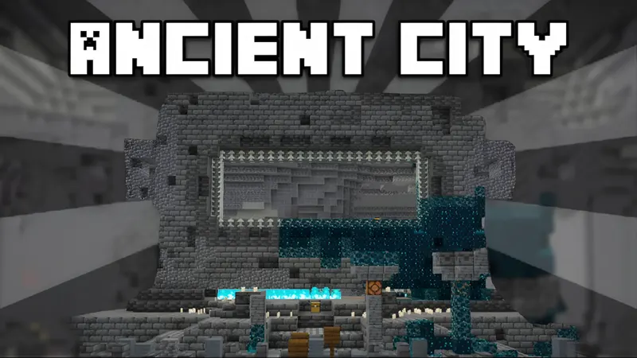
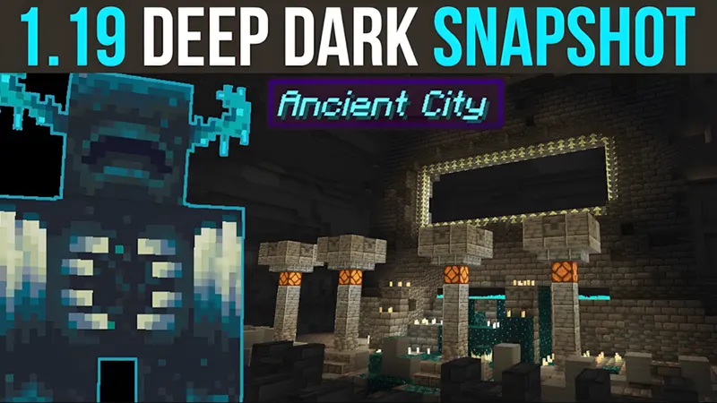
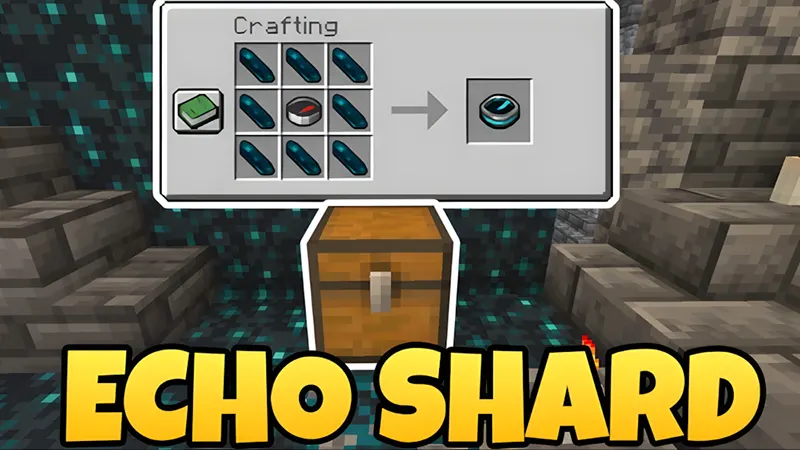
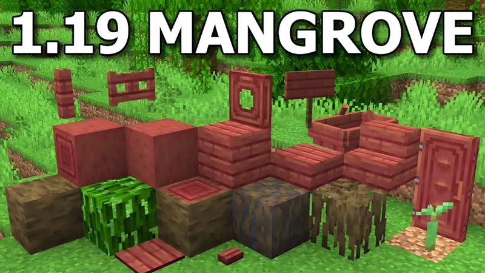
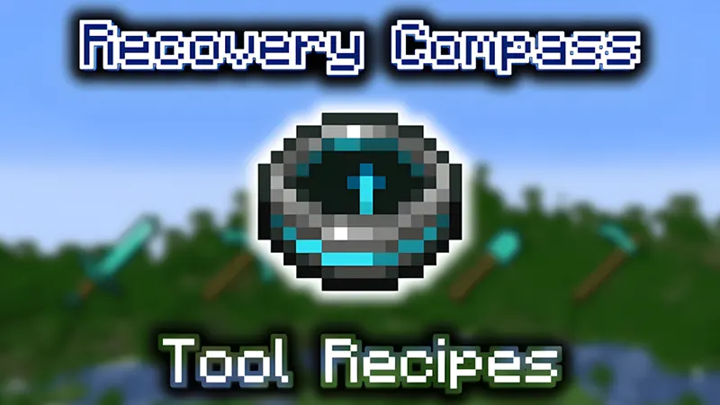
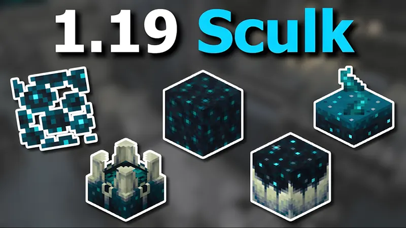

Minecraft PE 1.19
có nhiều thay đổi mang đến trải nghiệm thú vị cho người dùng. Tiêu biểu như:
Deep Dark:
Nằm sâu dưới lòng đất, biome nguy hiểm Deep Dark là nơi chứa đựng nhiều bí ẩn và thách thức.
Warden:
Là sinh vật bảo vệ Deep Dark, Warden rất nhạy cảm với âm thanh và chuyển động.
Warden truy đuổi với sức mạnh đáng kể khi phát hiện người chơi, tạo thách thức sinh tồn trên mọi chuyến thám hiểm.
Ancient City:
Ancient City là thành phố nằm dưới lòng đất, chứa đựng kho báu quý giá nhưng đi kèm hiểm nguy.
Để chinh phục và khai thác chúng, người chơi cần chiến thuật khéo léo.
Sculk:
Vật liệu phát hiện âm thanh xung quanh và gửi dữ liệu đến các khối xung quanh là Sculk.
Người chơi có thể thiết lập cơ chế cảm biến và tự động trong Deep Dark bằng việc kích hoạt Sculk.
Recovery compass:
Recovery Compass là la bàn khôi phục, chỉ về vị trí gần nhất người chơi tử vong.
Vật phẩm giúp lấy lại đồ đạc và chỉ định vị trí chiến lược để hồi sinh.
Echo shards:
Âm thanh được tạo ra từ Echo Shards giúp xác định vị trí trong Deep Dark.
Đồng thời, vật phẩm có thể kết hợp với compass để chế tạo Recovery Compass.
Mangrove swamp biome:
Với hệ sinh thái đa dạng, Mangrove Swamp là biome đầm lầy ngập mặn. Mangrove trees cây ngập mặn
mọc trong đầm lầy, gỗ của cây dùng để chế tạo bàn, tủ, sàn gỗ. Ếch và bọ cạp xuất hiện trong Mangrove Swamp,
đóng vai trò trong chế tạo vật phẩm mới như Froglight. Mud Brick, Mud Slab, khối bùn được sử dụng
để làm chậm tốc độ chạy, tăng chiều sâu chiến thuật cho người chơi.
Cải tiến;
Tối ưu hoá Cross-platform, hỗ trợ chơi trên nhiều thiết bị, từ PC, console đến Smartphone.
Người chơi có thể trải nghiệm mọi tính năng, không giới hạn thiết bị. Cải tiến giao diện người dùng,
menu cài đặt, cùng tính năng cập nhật nhanh chóng các vật phẩm mới giúp người chơi điều hướng
và cài đặt game thuận tiện hơn.